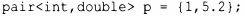
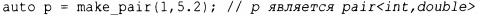
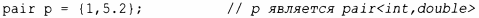
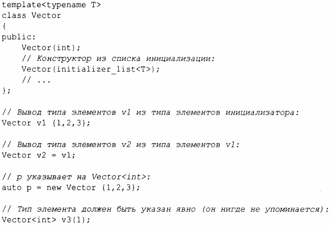
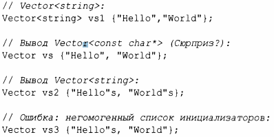
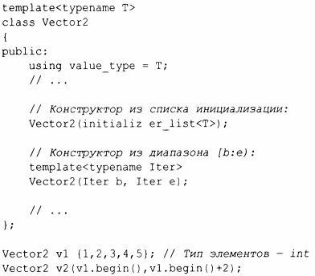
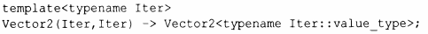

⇐6.2.2 Аргументы-значения шаблонов 6.3 Параметризованные операции⇒
Рассмотрим применение шаблона стандартной библиотеки pair:
Многим необходимость указывать аргументы-типы шаблона кажется утомительной, поэтому стандартная библиотека предлагает функцию rnake_pair(),которая выводит аргументы возвращаемого ею шаблона pair из аргументов функции:
Это приводит к очевидному вопросу "Почему нельзя просто вывести параметры шаблона из аргументов конструктора?" В С++ 17 это возможно:
Это проблема не только pair; функции rnake _очень распространены. Рассмотрим простой пример:
Эта возможность упрощает запись и может устранить раздражение, вызываемое ошибочным вводом избыточных аргументов-типов шаблона. Однако это не панацея. Вывод типов может приводить к сюрпризам (как в функциях make_; так и в конструкторах). Рассмотрим следующий фрагмент кода:
Тип строкового литерала в стиле С - const char* (§1.7.1). Если это не то, что вы хотели, добавьте суффикс s, чтобы сделать его корректной строкой string (§9.2). Если элементы списка инициализации имеют различные типы, компилятор не в состоянии вывести единственный тип элементов, и мы получаем сообщение об ошибке.
Когда аргумент шаблона не может быть выведен из аргументов конструктора, мы можем помочь компилятору, предоставляя правwю вывода (deduction guide). Рассмотрим следующий фрагмент:
Очевидно, что v2 должен быть Vector2<int>, но без помощи компилятор не может это вывести. В коде указано только, что существует конструктор из пары значений одного и того же типа. Без языковой поддержки концептов (§7.2) компилятор ничего не может предполагать об этом типе. Чтобы разрешить вывод, мы можем добавить правило вывода после объявления Vector2:
То есть если компилятор встречает Vector2, инициализированный парой итераторов, то он должен вывести Vector2:: value_type как тип значения итератора.
Применение правил вывода может сопровождаться очень тонкими эффектами, поэтому лучше всего разрабатывать шаблоны классов таким образом, чтобы правила вывода были не нужны. Однако в настоящий момент стандартная библиотека полна классов, которые (пока) не используют концепты (§7.2) и содержат неоднозначности, поэтому в ней используется довольно много правил вывода.